長方形で表現する
トレース
- 初心者の練習では「トレース」と呼ばれる下絵をなぞる描画の練習が、もっとも効果的な練習です
- ポイントは、配置する画像を選択し「テンプレート」のみにチェックして配置することです
- 作業中は、「プレビュー」と「アウトライン」を常に切り替えて、現状を確認する作業を忘れずに
新規ファイル作成
- プロファイルは「Web・プリント」どちらでもOK
- この段階では、Webを選択します（単位は、自動的にpxになります。）
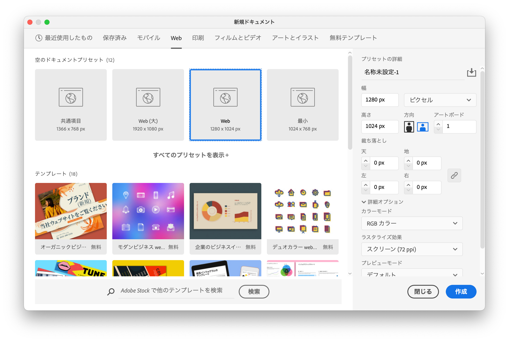
配置
- 「ファイル」メニュー → 「配置」
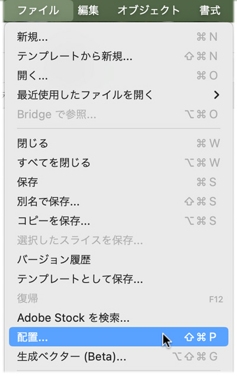
- 「テンプレート」のみにチェックをし「配置」
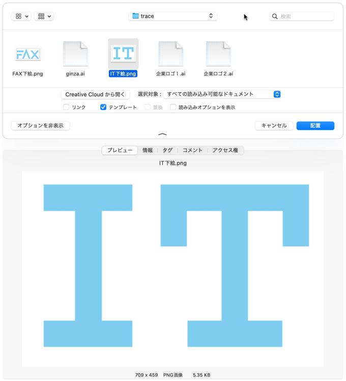
長方形だけでロゴを描いてみる：IT
- 下絵を「テンプレート」で配置する
- 塗りなしの長方形で基準となる形を描く（ユニット）
- その長方形を複製して規則性をつくる
- キーオブジェクトを利用して基準の辺に整列させる
- レイヤーパレットの下絵のアイコンをOFFにして、長方形の中心ポイントを見せる
- その基準点を軸に左右反転の複製を作る
- 全体を黒色に塗り完成
長方形ツールを移動コピー
- 移動コピーで、最初に描いた形状を利用して規則性を作る
- 選択ツール（黒い矢印）で、初めに描いた長方形を「Altキー + Shiftキー」で移動コピーをして下部の長方形を作る
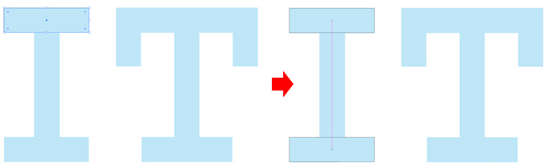
回転ツールをダブルクリック
- コピーした長方形を選んだままで「回転ツール」をダブルクリックする
- 選択したオブジェクトの中心が回転の基準点になります。
- 回転する角度を入力します
- コピーボタンを押して複製する
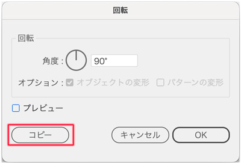
キーオブジェクトを基準に整列させる
- ２つのオブジェクトを選択する
- そこで基準となるオブジェクトをクリックします（キーオブジェクトの選択）
- 整列パレットで、整列させたい位置のアイコンをクリックする
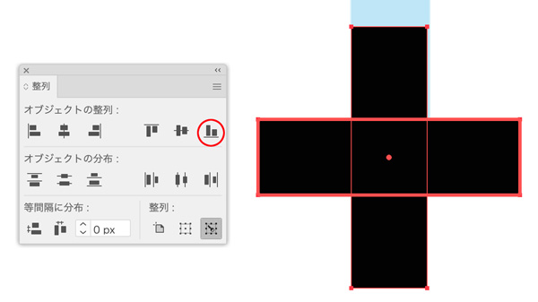
バンディングボックスの一辺の中央点のみ上に移動させる
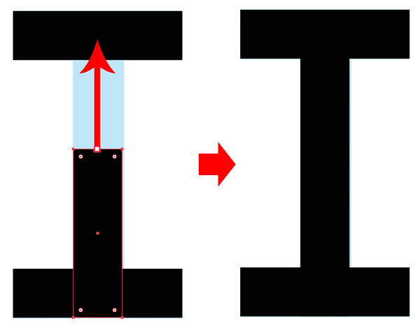
完成した「I」を移動コピー
- 全体を選択し、「Altキー」＋「Shifキー」で移動コピーする
移動コピーした長方形を整列
- 大きさを変更するときには「アウトライン」の状態で確認する
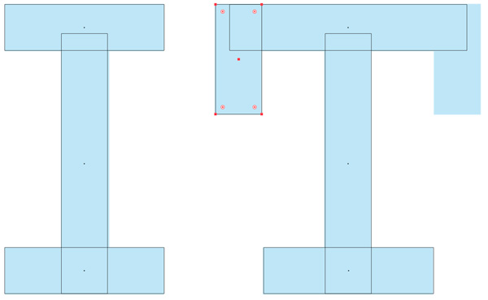
リフレクトツールで反転コピーを作る
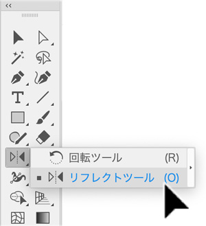
リフレクトの基準点
- ［表示］→［アウトライン］の状態で中心点（☓印）がみえます
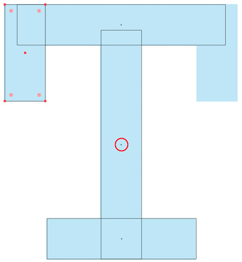
基準点をAltキー + クリック
- 垂直軸に対して、「コピー」を作成します
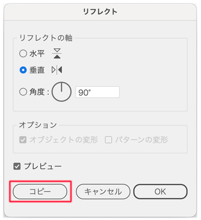
完成
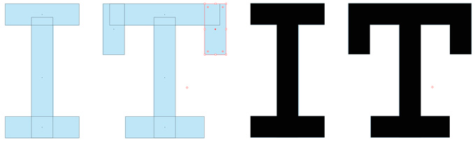
長方形だけでロゴを描いてみる：FAX
- 下絵を「テンプレート」で配置する
- 塗りなしの長方形で基準となる形を描く（ユニット）
- その長方形を複製して規則性をつくる
- キーオブジェクトを利用して基準の辺に整列させる
- Option移動をして複製を作る
- ダイレクト選択ツールでセグメントを選択して平行四辺形を作る
- パスファインダ「分割」で不要な部分を削除する
- それぞれの文字を「合体」する
- 全体を青色に塗り完成
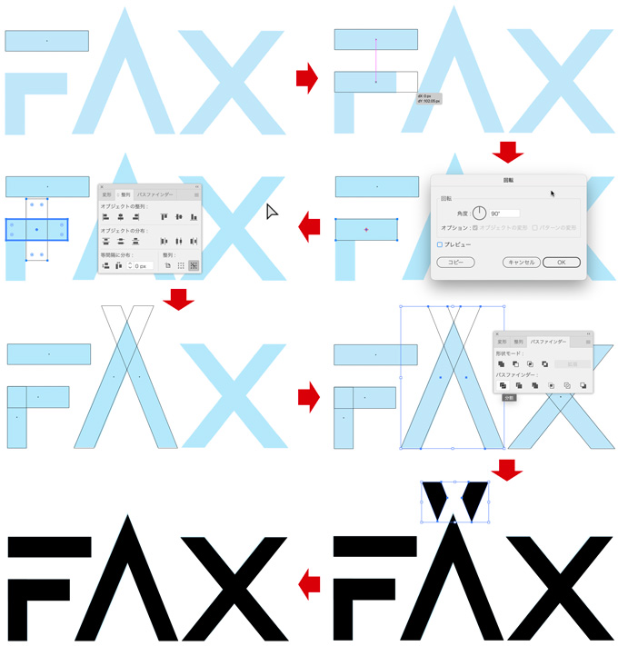
ダイレクト選択ツール（白い矢印）
- 「ダイレクト選択ツール（白い矢印）」の使い方
- まず選択解除しておいて、動かしたいセグメント（パス）のみを「Press & Drag」する
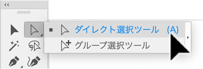
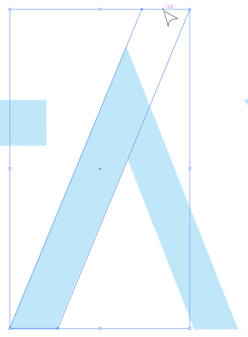